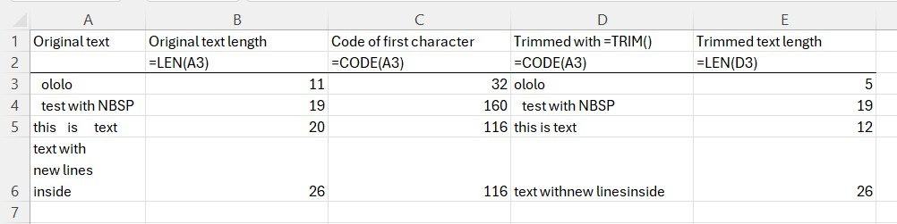

Как убрать лишние пробелы в Excel
СЖПРОБЕЛЫ, неразрывные пробелы и переносы строк: как правильно очистить текстовые ячейки.
Лишние пробелы – классическая причина сбоев в поиске, необнаруженных дубликатов и отклонённых при импорте файлов. "Иванов" и "Иванов " выглядят одинаково, но Excel считает их разными значениями.
СЖПРОБЕЛЫ
=СЖПРОБЕЛЫ(A2) убирает пробелы в начале и конце текста, а повторяющиеся пробелы между словами сводит к одному. Скопируйте формулы, затем вставьте их поверх исходного столбца через Специальная вставка → Значения.
Когда СЖПРОБЕЛЫ не помогает
Если значение всё ещё выглядит неправильно, в нём, скорее всего, не обычный пробел:
- Неразрывный пробел, код символа 160. Встречается в тексте с веб-страниц и из некоторых систем.
СЖПРОБЕЛЫего игнорирует. Используйте=СЖПРОБЕЛЫ(ПОДСТАВИТЬ(A2;СИМВОЛ(160);" ")). - Переносы строк, коды 10 и 13.
=ПЕЧСИМВ(A2)удаляет их (и другие непечатаемые символы до кода 31). Если вместо переноса нужен пробел, сначала применитеПОДСТАВИТЬ(A2;СИМВОЛ(10);" "). - Табуляция, код 9.
ПЕЧСИМВудаляет и её.
Чтобы выяснить, что именно в ячейке, используйте =UNICODE(ПРАВСИМВ(A2;1)) или =UNICODE(ЛЕВСИМВ(A2;1)). Результат 160 означает неразрывный пробел.
Универсальная формула
=СЖПРОБЕЛЫ(ПЕЧСИМВ(ПОДСТАВИТЬ(A2;СИМВОЛ(160);" ")))
Она покрывает большинство случаев в реальных данных.
Без формул
Найти и заменить (Ctrl+H) может убрать все пробелы в выделении: в поле Найти поставьте пробел, поле Заменить на оставьте пустым. Это подходит для кодов и чисел вроде 1 234 567, но слова тоже склеятся, так что для имён и адресов не применяйте.
Чтобы ввести неразрывный пробел в поле поиска, удерживайте Alt и наберите 0160 на цифровой клавиатуре.
Проверка до и после
Сравните =ДЛСТР(A2) и =ДЛСТР(СЖПРОБЕЛЫ(A2)), чтобы посчитать, у скольких ячеек действительно есть проблема:

=СУММПРОИЗВ(--(ДЛСТР(A2:A1000)<>ДЛСТР(СЖПРОБЕЛЫ(A2:A1000))))
С надстройкой
Команда Удалить лишние пробелы (Trim Spaces) работает прямо на выделенных ячейках: убирает пробельные символы в начале и конце, переносы строк и лишние пробелы без вспомогательных столбцов и обратной вставки значений.
Команда надстройки для этой задачи: Удалить пробелы.